Observations
275
Days covered
183
Good rate
90.2%
Regularity
51.4%
Mean clock time
10:22
Typical gap
13.9 h
Busiest day
Sunday
Zero-poop days
17
obs 9.3% / exp 22.3%The dial
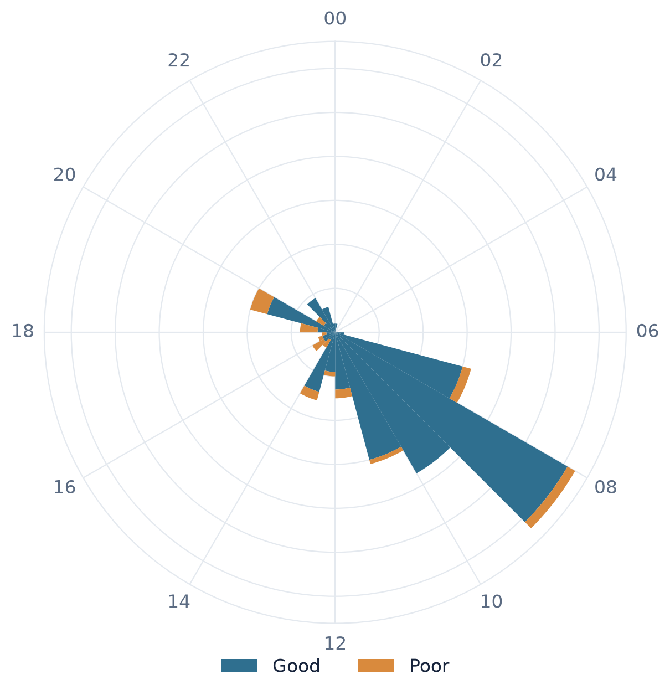
Angle = time of day (00:00 at the top, clockwise); bar length = count. Regularity 51.4% (p < 0.001).
Poops by weekday
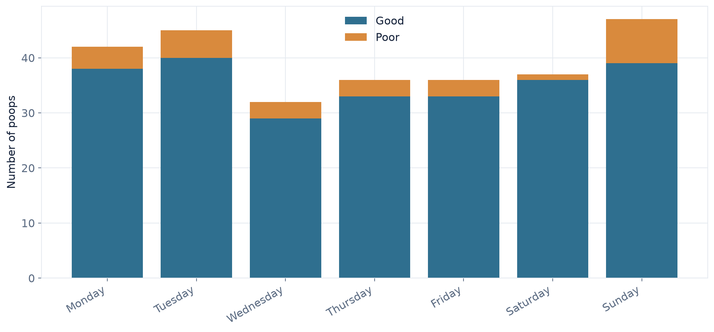
Frequency across weekdays: p = 0.619.
Good rate by weekday
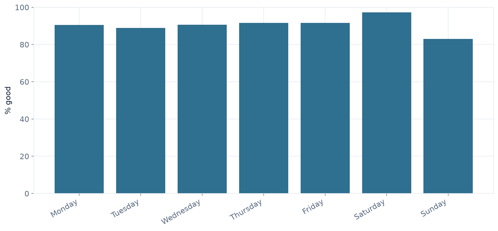
Quality vs weekday: p = 0.525.
Cumulative poops over time
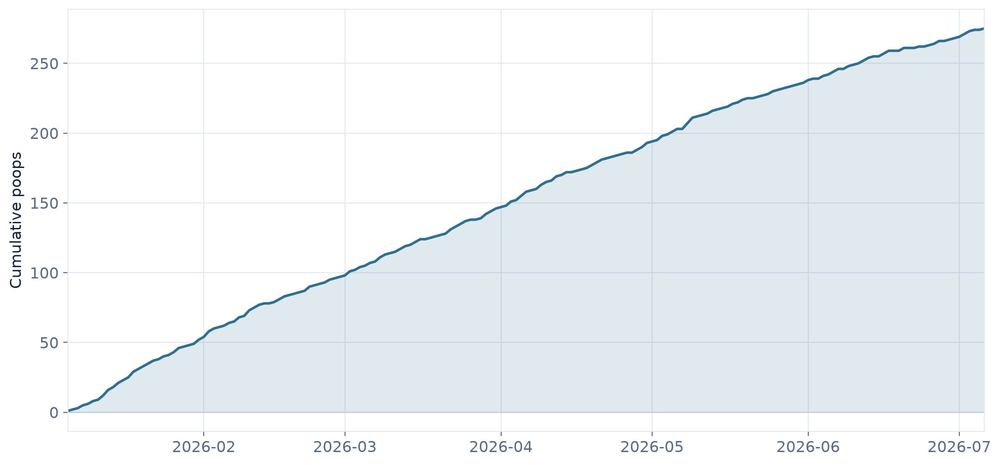
Rolling average
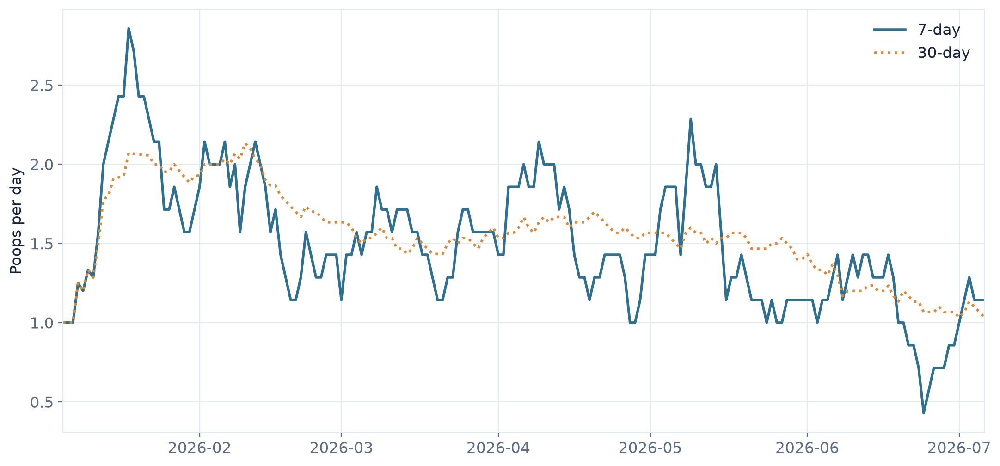
7-day (solid) and 30-day (dotted) mean poops per day.
Poops by month
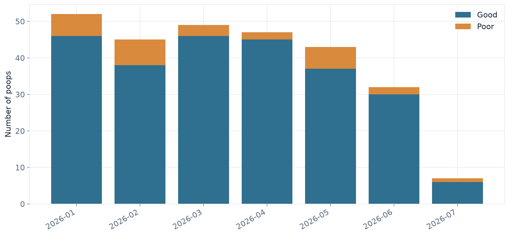
Poop calendar
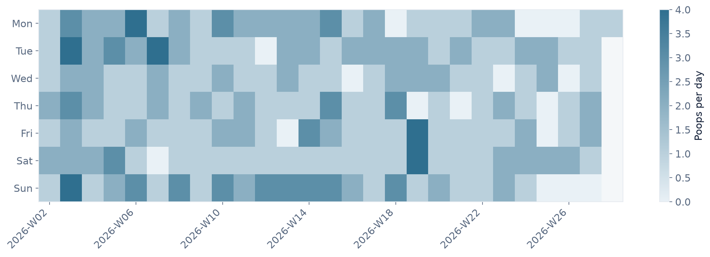
Each cell is a day; darker means more poops, blank means none logged.
Top 3 longest streaks
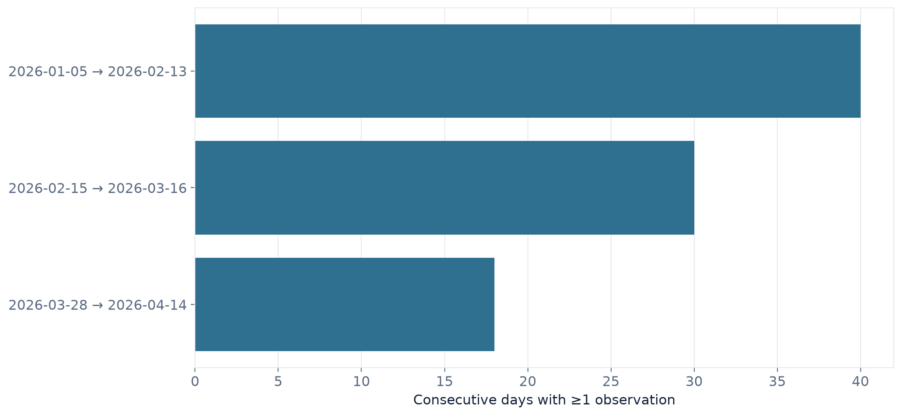
Daily count distribution
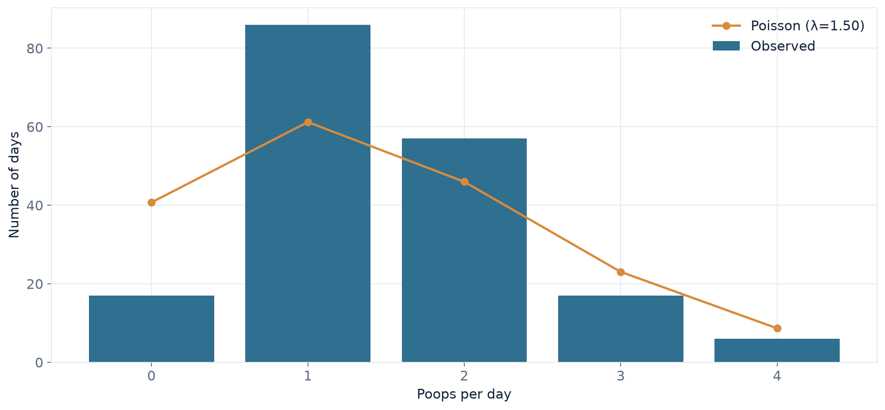
Bars = observed; line = Poisson expectation for the same number of days.
Time between poops
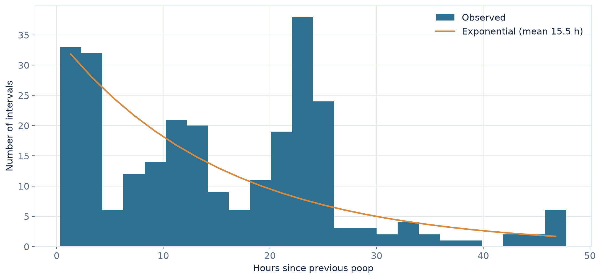
Bars = observed gaps; line = exponential model. Long multi-day gaps trimmed.
Poop quality
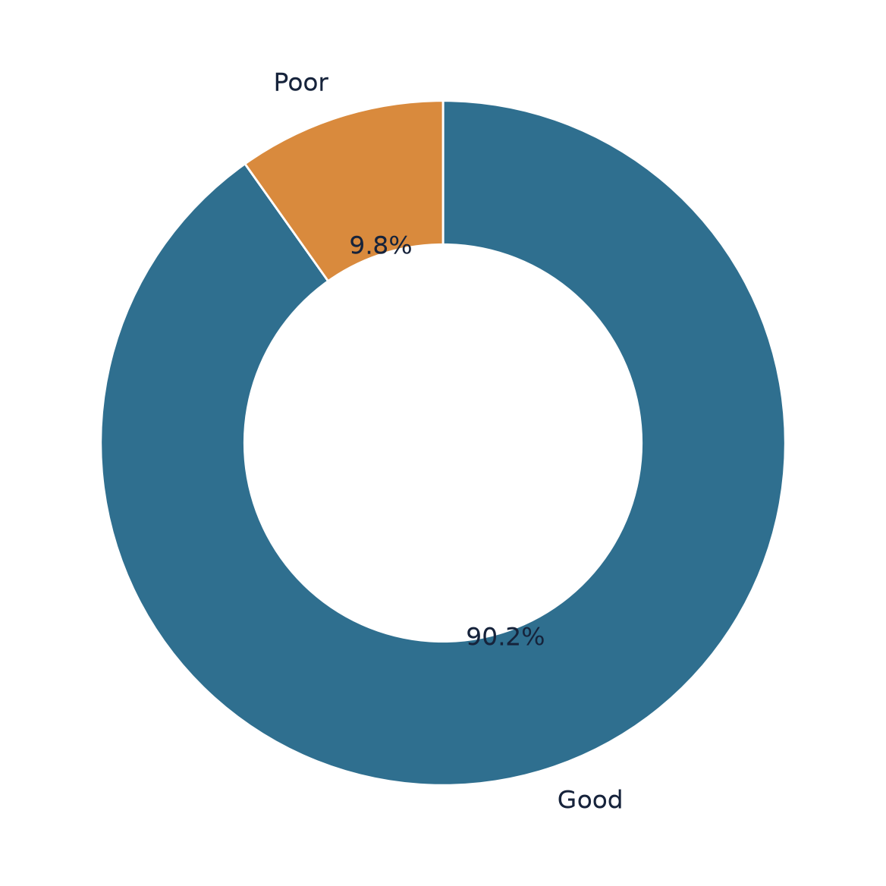
Methods & readings
Regularity (51.4%). Clock times are treated as angles on a 24-hour circle; the score is the mean resultant length, which is 0% if timing is spread evenly around the clock and 100% if every poop lands at the same time of day. A Rayleigh test checks that this clustering is real rather than chance (p < 0.001).
Weekday frequency. A chi-square test compares poops per weekday against how many of each weekday the log actually spans (p = 0.619).
Weekday quality. A contingency test asks whether the good/poor split depends on the day (p = 0.525) — treat with care, some day/quality cells are sparse.
Models. Daily counts are compared with a Poisson model and gaps between poops with an exponential model; both are overlaid on the observed data above.